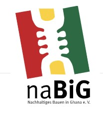

Um das Projekt zu verwirklichen, arbeiten wir bereits mit dem gemeinnützigen Verein naBiG e.V zusammen.
Diese entwicklen Lösungen für nachhaltige Bauweisen in Ghana.
NaBiG hat aufgrund der dort tätigen Ingenieure, wie David Bittner, Erfahrung im Bau einer Solaranlage.